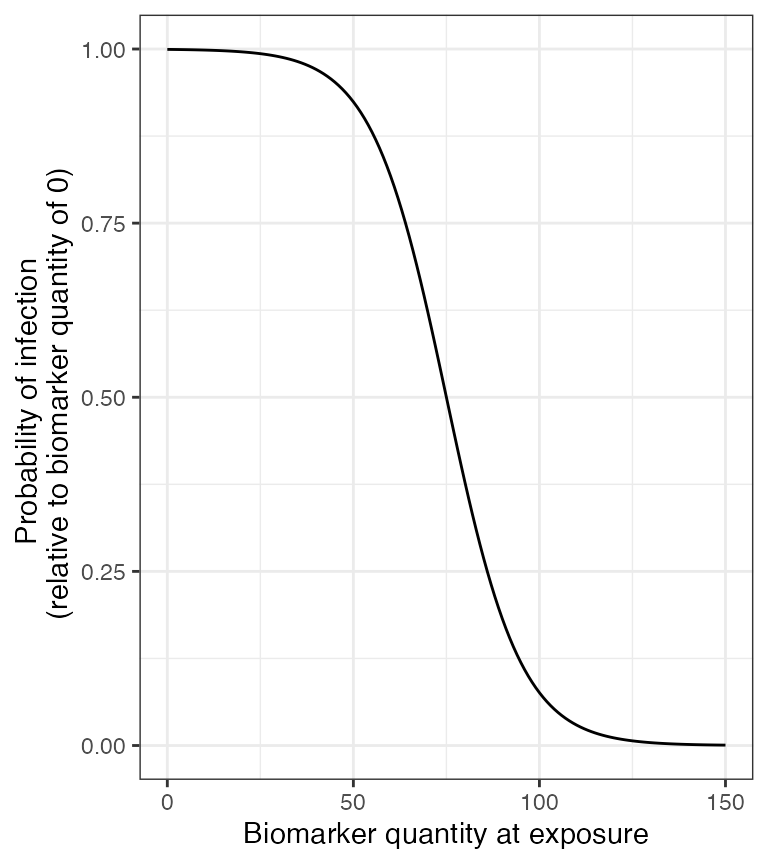
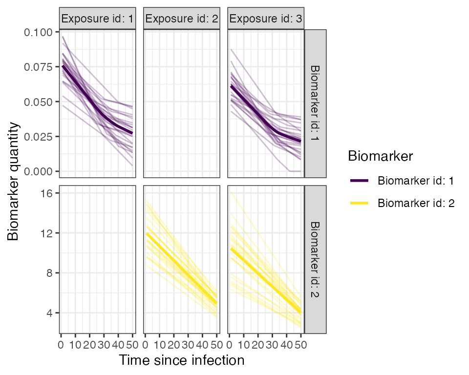
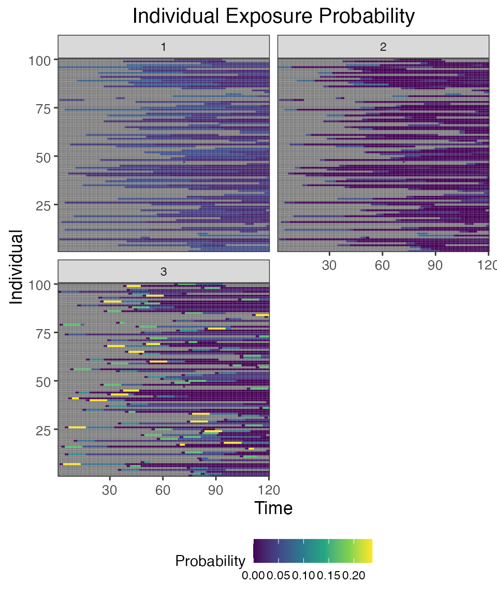
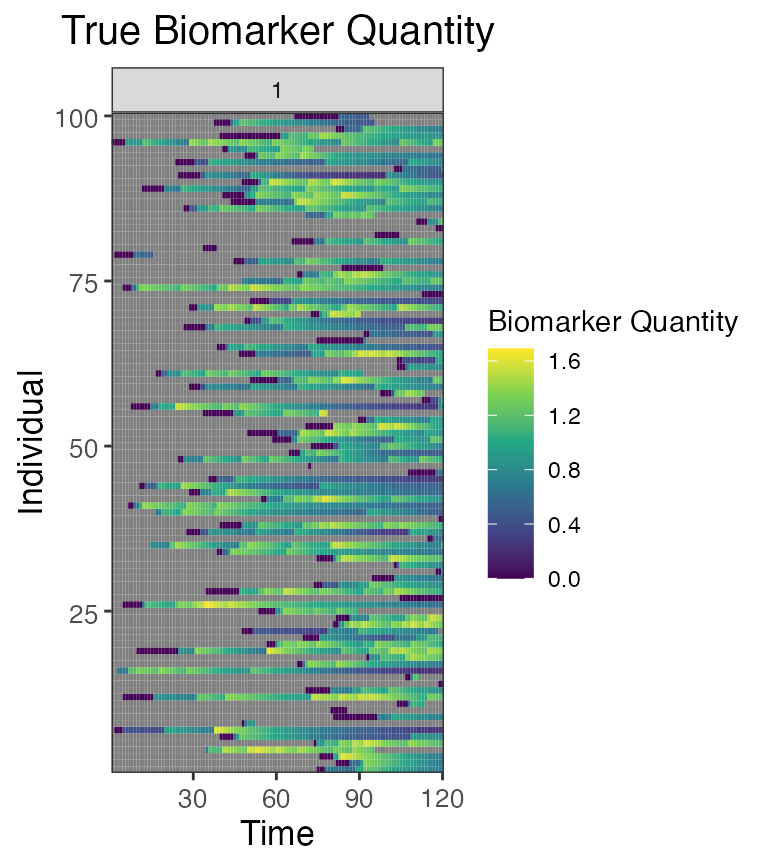
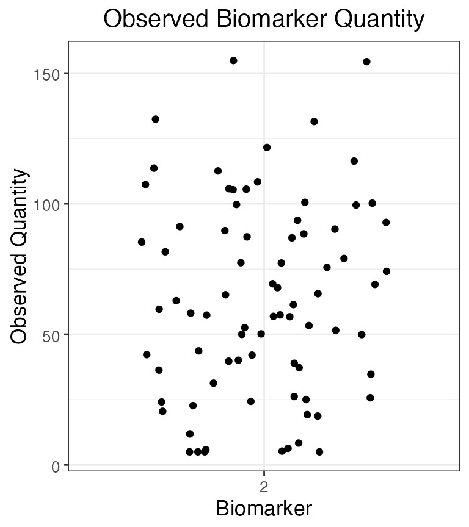

Paper case study 2: Multi-pathogen system with multivalent vaccinaton (Diphtheria and Pertussis)
Source:vignettes/case_study_2_diphtheria_pertussis.Rmd
case_study_2_diphtheria_pertussis.RmdHere, we will use the serosim package to generate a cross-sectional serosurvey of a multi-pathogen system with multivalent vaccination. The overall structure and principles discussed within this case study are applicable to pathogen systems like measles, mumps, and rubella with MMR vaccination or diphtheria, tetanus, and pertussis system with DTP vaccination among many others. This simulation will track natural infection to pathogen A, natural infection to pathogen B and bivalent vaccination with pathogen A and pathogen B specific biomarkers for 100 individuals across a 10 year period. At the end of the 10 year period, we will measure biomarker quantities against both pathogen A specific biomarkers and pathogen B specific biomarkers for all individuals. We will set up each of the required arguments and models for runserosim in the order outlined in the methods section of the paper.
This case study is built around diphtheria and pertussis and we are interested in tracking bivalent vaccination and both diphtheria and pertussis natural infection across a 10 year period. We will conduct a cross-sectional serological survey where we will use an ELISA kit to measure an individual’s diphtheria and pertussis IgG titer.In this example, biomarker quantity, titer level and antibody level all mean the same thing.
We will use published diphtheria and pertussis serological surveys and any well characterized epidemiological and immunological characteristics of diphtheria and pertussis to parameterize our models wherever possible and make reasonable assumptions for other required model parameters wherever information is lacking.
We narrowed our search to diphtheria and pertussis serological surveys conducted with ELISA IgG test kits that reported quantitative titers in comparable units. We did not conduct an extensive search of all diphtheria and pertussis serological surveys in order to parameterize our models as it is beyond the scope of this case study. Our aim was to provide a simple example of how users can use the literature to inform required serosim inputs. Within each section below, we will briefly explain the rationale behind our selected model inputs. We caution users to conduct their own research into the models and associated parameters which best align with their disease system and biomarker test kits.
Load necessary packages:
## Install and load serosim
## devtools::install_github("AMenezes97/serosim")
library(serosim)
## Load additional packages required
library(tidyverse)
library(data.table)
library(ggplot2)
library(patchwork)
library(reshape2)1.1 Simulation Settings
We will simulate monthly time steps across a 10 year period. Therefore, we will have 120 time steps. Note that these are arbitrary time steps which will need to be scaled to the right time resolution to match any time-based parameters used later on.
1.2 Population Demography
For this case study, we are interested in tracking an individual’s socioeconomic status, group(a proxy for location), birth and removal time. We will use the generate_pop_demography function to create the demography tibble needed for runserosim.
Note: The runserosim function, called later on, only requires a demography tibble with two columns (individuals and times).
## Specify the number of individuals in the simulation
N<-100
## Pre-load the demography categories, values and distributions
## Specify options for each demography element and the distribution of each within the population
## We are interested in simulating a population where individuals have varying nutritional status and can reside in either of 2 locations
aux <- list("NS"=list("name"="NS","options"=c("low","medium","high"), "distribution"=c(0.3,0.3,0.4)),
"Group"=list("name"="group","options"=c(1, 2), "distribution"=c(0.5,0.5)))
## Generate the population demography tibble
## Let's assume that individuals are removed from the population and set prob_removal to 0.2
demography <- generate_pop_demography(N, times, age_min=0, removal_min=1, removal_max=120, prob_removal=0.2, aux=aux)## Joining with `by = join_by(i)`
## Examine the generated demography tibble
head(demography)## # A tibble: 6 × 6
## i birth removal times NS group
## <int> <dbl> <dbl> <dbl> <chr> <dbl>
## 1 1 54 110 1 high 1
## 2 1 54 110 2 high 1
## 3 1 54 110 3 high 1
## 4 1 54 110 4 high 1
## 5 1 54 110 5 high 1
## 6 1 54 110 6 high 1
tail(demography)## # A tibble: 6 × 6
## i birth removal times NS group
## <int> <dbl> <dbl> <dbl> <chr> <dbl>
## 1 100 108 111 115 medium 1
## 2 100 108 111 116 medium 1
## 3 100 108 111 117 medium 1
## 4 100 108 111 118 medium 1
## 5 100 108 111 119 medium 1
## 6 100 108 111 120 medium 11.3 Exposure to biomarker mapping
Now, we have to set up the exposure IDs and biomarker IDs for our desired simulation. Individuals can be seropositive either by natural infection or by vaccination and we want to track both exposure types separately.
In this case, we need three exposure IDs:
- Diphtheria natural infection (DP_ifxn)
- Pertussis natural infection (PT_ifxn)
- Diphtheria and pertussis combined vaccination (vacc)
And two biomarker IDs:
- Diphtheria specific biomarkers (DP_antibody)
- Pertussis specific biomarkers (PT_antibody)
runserosim requires that exposure_id and biomarker_id are numeric so we will use the reformat_biomarker_map function to create a new version of the biomarker map. Users can go directly to numeric biomarker_map if they wish. Note that the reformat_biomarker_map function will number the exposures and biomarkers in alphabetical order so that the first exposure event or biomarker that is listed will not necessarily be labeled as 1.
## Create biomarker map
biomarker_map_original <- tibble(exposure_id=c("DP_ifxn","PT_ifxn","vacc","vacc"),biomarker_id=c("DP_antibody","PT_antibody","DP_antibody","PT_antibody"))
biomarker_map_original## # A tibble: 4 × 2
## exposure_id biomarker_id
## <chr> <chr>
## 1 DP_ifxn DP_antibody
## 2 PT_ifxn PT_antibody
## 3 vacc DP_antibody
## 4 vacc PT_antibody
## Reformat biomarker_map for runserosim
biomarker_map <-reformat_biomarker_map(biomarker_map_original)
biomarker_map## # A tibble: 4 × 2
## exposure_id biomarker_id
## <dbl> <dbl>
## 1 1 1
## 2 2 2
## 3 3 1
## 4 3 21.4 Force of Exposure and Exposure Model
Now, we need to specify the foe_pars argument which contains the force of exposure for all exposure_IDs across all time steps and groups. We also need to specify the exposure model which will be called within runserosim later. The exposure model will determine the probability that an individual is exposed to a specific exposure event.
We specified the same force of exposure for all time steps within foe_pars for simplicity but users will likely have varying numbers to match real world settings.
For our selected exposure model, the probability of exposure (1-e^(-λ)) depends on the force of exposure (λ) at the current time t for group g modulated by relevant demographic elements (dem_mod). For simplicity, we selected arbitrary age and demography modifiers specified below. Since we have two groups, there are 2 rows in the first foe_pars dimension to specify the group specific force of exposure.
## Create an empty array to store the force of exposure for all exposure types across all time steps and groups
## Dimension 1: Group
## Dimension 2: Times
## Dimension 3: Exposure ID in the numeric order that they appear in the biomarker map
foe_pars <- array(0, dim=c(n_distinct(demography$group),max(times), n_distinct(biomarker_map$exposure_id)))
## Note that we can specify a different force of exposure for each group, time and exposure ID
## We specified the same value for all time steps within foe_pars for simplicity.
## Specify the force of exposure for exposure ID 1 which represents diphtheria natural infection (DP_ifxn)
foe_pars[1,,1] <- 0.04 ## Group 1 (aka Location 1)
foe_pars[2,,1] <- 0.03 ## Group 2 (aka Location 2)
## Specify the force of exposure for exposure ID 2 which represents pertussis natural infection (PT_ifxn)
foe_pars[1,,2] <- 0.02 ## Group 1 (aka Location 1)
foe_pars[2,,2] <- 0.01 ## Group 2 (aka Location 2)
## Specify the force of exposure for exposure ID 3 which represents diphtheria and pertussis combined vaccine (vacc)
foe_pars[1,,3] <- 0.02 ## Group 1 (aka Location 1)
foe_pars[2,,3] <- 0.03 ## Group 2 (aka Location 2)
## Specify a simple exposure model which calculates the probability of exposure from the force of exposure modulated by age and demography elements
exposure_model<-exposure_model_dem_mod
## This exposure model requires dem_mod and t_in_year arguments
## Create a tibble with any relevant demography modifiers that affect exposure probability
## For simplicity, we selected arbitrary numbers.
## First, we will specify age modifiers
## Individuals who are 0-3 are 2 times more likely to be exposed to diphtheria
age_mod_1<-tibble(exposure_id=rep(1,11), column=rep("age",times=11), value=0:10, modifier=c(2,2,2,2,1,1,1,1,1,1,1))
## Individuals who are 0-3 are 2 times more likely to be exposed to pertussis
age_mod_2<-tibble(exposure_id=rep(2,11), column=rep("age",times=11), value=0:10, modifier=c(2,2,2,1,1,1,1,1,1,1,1))
## Individuals who are less than one year old are 3 times more likely be vaccinated than other age classes
age_mod_3<-tibble(exposure_id=rep(3,11), column=rep("age",times=11), value=0:10, modifier=c(3,1,1,1,1,1,1,1,1,1,1))
age_mod<-rbind(age_mod_1,age_mod_2,age_mod_3)
age_mod## # A tibble: 33 × 4
## exposure_id column value modifier
## <dbl> <chr> <int> <dbl>
## 1 1 age 0 2
## 2 1 age 1 2
## 3 1 age 2 2
## 4 1 age 3 2
## 5 1 age 4 1
## 6 1 age 5 1
## 7 1 age 6 1
## 8 1 age 7 1
## 9 1 age 8 1
## 10 1 age 9 1
## # … with 23 more rows
## Now we will specify additional demography exposure modifiers and combine them with the previous ones
## Here, individuals who are of low nutritional status are twice as likely of being exposed to diphtheria and pertussis while individuals who are of medium nutritional status are 1.5 times as likely of being exposed when compared to individuals of high nutritional status
## Individuals of high nutritional status are 3 times more likely to be exposed to exposure ID 3 (vaccination) while individuals who are of medium nutritional status are 2 times more likely to be exposed to exposure ID 3 (vaccination) than individuals of low nutritional status.
## Note that the modifiers must be defined for all combinations of exposure types and demographic elements
mod<-tibble(exposure_id=c(1,1,1,2,2,2,3,3,3), column=rep("NS",times=9), value=rep(c("low","medium", "high"),3), modifier=c(2,1.5,1,2,1.5,1,1,2,3))
mod## # A tibble: 9 × 4
## exposure_id column value modifier
## <dbl> <chr> <chr> <dbl>
## 1 1 NS low 2
## 2 1 NS medium 1.5
## 3 1 NS high 1
## 4 2 NS low 2
## 5 2 NS medium 1.5
## 6 2 NS high 1
## 7 3 NS low 1
## 8 3 NS medium 2
## 9 3 NS high 3
## Combine both age modifiers and additional modifiers
dem_mod<-rbind(age_mod,mod)
## Specify the number of time steps within a year which will be used to calculate an individual's age.
## We are simulating on the monthly scale so there are 12 time steps within a year.
t_in_year=12
## Examine the probability of exposure over time for the specified exposure model
plot_exposure_model(indivs=1:5,exposure_model=exposure_model_dem_mod, times=times, n_groups = 2, n_exposures = 3, foe_pars=foe_pars, demography=demography, dem_mod=dem_mod,t_in_year=t_in_year)1.5 Immunity Model
Here, we specify the immunity model which will determine the probability that an exposure event is successful in inducing an immunological response. Since we have both vaccination and natural infection events, we will use immunity_model_vacc_ifxn_biomarker_prot. With this immunity model, the probability of successful vaccination exposure depends on the number of vaccines received prior to time t and the individual’s age at time t while the probability of successful infection is dependent on the biomarker quantity, in this case antibody titer, at the time of exposure. Individuals can have up to 3 successful vaccination events (aka 3 doses) and are eligible for vaccination starting at 2 months of age to align with the diphtheria/pertussis vaccination schedule.
As for the probability of a successful infection, we placed no limit
on the maximum number of infections to either diphtheria or pertussis
however our selected immunity model will take into account an
individual’s current biomarker
level when determining the probability of a successful infection.
Additional successful exposure events aka “reinfection” events are
representative of boosting events which can occur if an individual is
exposed to either pathogen following a vaccination or previous
infection. The user can limit the frequency of reinfections by adjusting
the biomarker-mediated protection (also known as titer-mediated
protection) parameters or by specifying a maximum number of allowed
successful exposure events. The titer-mediated protection parameters
used within this model are defined within model_pars which will be
loaded in section 1.6.
Again, the following diphtheria and pertussis titer-mediated protection parameters were selected by a non-exhaustive literature search. The titer cutoffs used below were also discussed in a previous analysis of diphtheria and pertussis serology (Razafimahatratra et al. 2022).
Diphtheria: 1. Individuals whose diphtheria antibody levels are under 0.01 IU/mL are considered highly susceptible to disease while individuals with higher levels are associated with less severe symptoms (Ipsen 1946; Björkholm et al. 1986; Danilova et al. 2006; Ohuabunwo et al. 2005). 2. Individuals whose antibody levels are 0.01 IU/mL have the lowest titer level which confers some degree of protection while individuals with >=0.1 IU/mL are associated with long term protection (Efstratiou, Maple, and World Health Organization. Regional Office for Europe 1994,). 3. Antibody levels in between 0.01 and 0.09 IU/mL are considered to provide basic levels of protection against disease (World Health Organization 2017).
Pertussis: 1. Low anti-pertussis IgG antibodies have shown significant correlation with pertussis susceptibility (Storsaeter et al. 2003) but a protective threshold has not been established (Saso and Kampmann 2020) since there is no established immunological correlate of protection against disease (Plotkin 2008). 2. Given the information presented above, we have chosen that antibody levels between 40-100 IU/mL will confer higher level of protection since they are indicative of serpositivity and of recent pertussis infection or pertussis vaccination (“BORDG - Overview: Bordetella Pertussis Antibody, IgG, Serum,” n.d.; Chen et al. 2016).
## Specify immunity model within the runserosim function below
immunity_model<-immunity_model_vacc_ifxn_biomarker_prot
## Specify which exposure IDs represent vaccination events
## In this case, only exposure ID 3 is a vaccination event
vacc_exposures<-3
## Specify the time step after birth at which an individual is eligible for vaccination (2 months old for diphtheria and pertussis combine vaccine); ; note non-vaccine exposures are listed as NAs
vacc_age<-c(NA,NA,2)
## Specify the maximum number of successful exposure events an individual can receive for each exposure type
## We placed no successful exposure limit on the number of diphtheria or pertussis infection exposures and 3 dose limit on the vaccine exposure.
max_events<-c(Inf,Inf,3)
## Plot biomarker-mediated protection curve given parameters specified within model_pars for biomarker 1, diphtheria antibody (DP_antibody) which will be loaded in section 1.6
## The immunity model we selected will take into account an individual's current titer to diphtheria when determining the probability of successful infection.
## Titers are ploted in mIU/mL
plot_biomarker_mediated_protection(0:150, biomarker_prot_midpoint=75, biomarker_prot_width=.1)
## Plot biomarker-mediated protection curve given parameters specified within model_pars for biomarker 2, pertussis antibody (PT_antibody) which will be loaded in section 1.6
## The immunity model we selected will take into account an individual's current titer to pertussis when determining the probability of successful infection.
## Titers are ploted in IU/mL
plot_biomarker_mediated_protection(0:100, biomarker_prot_midpoint=40, biomarker_prot_width=.25)1.6 Antibody model and model parameters
Now, we specify the antibody model to be used within runserosim to track antibody kinetics, or more broadly biomarker kinetics for each biomarker produced from successful exposure events. We will be using a biphasic boosting-waning model. This model assumes that for each exposure there is a set of long-term boost, long-term boost waning, short-term boost, and short-term boost waning parameters. Given varying diphtheria antibody dynamics observed in early and late life, we decided that a biphasic boosting-waning model was appropriate for our purposes (Voysey et al. 2016).
The antibody kinetics parameters needed for the antibody model are pre-loaded within a csv file which will take on the argument name: model_pars. Users can edit the csv file to modify any parameters. runserosim requires that exposure_id and biomarker_id are numeric within model_pars so we will use the reformat_biomarker_map function again to create a new version of model_pars. Users can go directly to numeric model_pars if they wish.
We selected a few diphtheria and pertussis serological surveys conducted which reported IgG titers following vaccination to inform the vaccine induced boost and waning parameters. There are many complexities and heterogeneity in these parameters which arise from different vaccine types and vaccination schedules. We neglect these complexities and select a few papers to give us some rough parameters for this example simulation.
After 3 vaccine doses, diphtheria titers ranged 1.5-1.7 IU/mL (Kimura et al. 1991) and pertussis titers above 100 IU/mL are associated with recent vaccination (“BORDG - Overview: Bordetella Pertussis Antibody, IgG, Serum,” n.d.). Diphtheria antibody half-life has been estimated to be around 19-27 years (Amanna, Carlson, and Slifka 2007; Hammarlund et al. 2016) with 10% of children losing immunity by one year following the primary vaccination series (Pichichero et al. 1987); 67% of children after 3 to 13 years and 83% after 14 to 23 years (Crossley et al. 1979). As for pertussis, the duration of immunity after a 3 dose series of the wP vaccine is estimated to be from 4 to 12 years (Sheridan et al. 2014). Pertussis titers >=100 IU/mL are associated with recent infection or vaccination within the past year while titers between 40 and 100 IU/mL are associated with recent infection (“BORDG - Overview: Bordetella Pertussis Antibody, IgG, Serum,” n.d.)
Our selected antibody kinetics parameters given our brief and limited literature search are as follows:
Diphtheria vaccine: Long term boost: 0.3-0.5 IU/mL Long term boost waning: 0.01 IU/mL per month Short term boost: 0.1-0.3 IU/mL Short term boost waning: 0.033 IU/mL per month
Pertussis vaccine: Long term boost: 30-50 IU/mL Long term boost waning: 0.0066 IU/mL per month Short term boost: 40-80 IU/mL Short term boost waning: 0.016 IU/mL per month
We were unable to find studies that reported titer kinetics following known infection events in comparable units. For simplicity, we will assume that natural infection boosting parameters are 25% higher than vaccine induced antibody boosting with similar waning rates.
Lastly, we define the draw_parameters function which determines how each individual’s antibody kinetics parameters are simulated from the within-host processes parameters tibble (model_pars). We will use a function which draws parameters directly from model_pars for the antibody model with random effects to represent individual heterogeneity in immunological responses. Parameters are drawn randomly from a distribution with mean and standard deviation specified within model_pars. This draw_parameters function also incorporates biomarker quantitiy dependent boosting (also known as titer-dependent boosting) where an individual’s realized boost is dependent on their titer level at the time of the exposure event.
We arbitrarily set the diphtheria titer-dependent boosting effects following an additional successful exposure event for individuals with diphtheria levels above 1.7 IU/mL to be only 10% of the full boost. Similarly, individuals with pertussis titers above 100 IU/mL will only receive 10% of the full boost for any additional successful exposure event.
## Specify the antibody model
antibody_model<-antibody_model_biphasic
## Bring in the antibody parameters needed for the antibody model
## Note that the titer-mediated protection parameters needed for the immunity model, the titer-ceiling parameters needed for draw_parameters and the observation error parameter needed for the observation model are all defined here too.
## Also note that these are all arbitrary parameter values chosen for this toy example.
model_pars_path <- system.file("extdata", "model_pars_cs2.csv", package = "serosim")
model_pars_original <- read.csv(file = model_pars_path, header = TRUE)
model_pars_original ## exposure_id biomarker_id name mean sd
## 1 vacc DP_antibody boost_long 0.400000 1e-01
## 2 vacc DP_antibody boost_short 0.200000 1e-01
## 3 vacc DP_antibody wane_long 0.010000 5e-03
## 4 vacc DP_antibody wane_short 0.033000 5e-03
## 5 vacc DP_antibody biomarker_ceiling_threshold 1.700000 NA
## 6 vacc DP_antibody biomarker_ceiling_gradient 0.529411 NA
## 7 <NA> DP_antibody obs_sd NA 5e-02
## 8 vacc PT_antibody boost_long 40.000000 1e+01
## 9 vacc PT_antibody boost_short 60.000000 2e+01
## 10 vacc PT_antibody wane_long 0.006600 5e-04
## 11 vacc PT_antibody wane_short 0.016000 5e-04
## 12 vacc PT_antibody biomarker_ceiling_threshold 100.000000 NA
## 13 vacc PT_antibody biomarker_ceiling_gradient 0.009000 NA
## 14 <NA> PT_antibody obs_sd NA 1e+01
## 15 DP_ifxn DP_antibody boost_long 0.500000 1e-01
## 16 DP_ifxn DP_antibody boost_short 0.250000 1e-01
## 17 DP_ifxn DP_antibody wane_long 0.010000 5e-03
## 18 DP_ifxn DP_antibody wane_short 0.033000 5e-03
## 19 DP_ifxn DP_antibody biomarker_ceiling_threshold 1.700000 NA
## 20 DP_ifxn DP_antibody biomarker_ceiling_gradient 0.529411 NA
## 21 DP_ifxn DP_antibody biomarker_prot_midpoint 0.075000 NA
## 22 DP_ifxn DP_antibody biomarker_prot_width 0.100000 NA
## 23 PT_ifxn PT_antibody boost_long 50.000000 1e+01
## 24 PT_ifxn PT_antibody boost_short 75.000000 2e+01
## 25 PT_ifxn PT_antibody wane_long 0.006600 5e-04
## 26 PT_ifxn PT_antibody wane_short 0.016000 5e-04
## 27 PT_ifxn PT_antibody biomarker_ceiling_threshold 100.000000 NA
## 28 PT_ifxn PT_antibody biomarker_ceiling_gradient 0.009000 NA
## 29 PT_ifxn PT_antibody biomarker_prot_midpoint 40.000000 NA
## 30 PT_ifxn PT_antibody biomarker_prot_width 0.250000 NA
## distribution
## 1 log-normal
## 2 log-normal
## 3 log-normal
## 4 log-normal
## 5
## 6
## 7 normal
## 8 log-normal
## 9 log-normal
## 10 log-normal
## 11 log-normal
## 12
## 13
## 14 normal
## 15 log-normal
## 16 log-normal
## 17 log-normal
## 18 log-normal
## 19
## 20
## 21
## 22
## 23 log-normal
## 24 log-normal
## 25 log-normal
## 26 log-normal
## 27
## 28
## 29
## 30
## Reformat model_pars for runserosim
model_pars<-reformat_biomarker_map(model_pars_original)
model_pars## exposure_id biomarker_id name mean sd
## 1 3 1 boost_long 0.400000 1e-01
## 2 3 1 boost_short 0.200000 1e-01
## 3 3 1 wane_long 0.010000 5e-03
## 4 3 1 wane_short 0.033000 5e-03
## 5 3 1 biomarker_ceiling_threshold 1.700000 NA
## 6 3 1 biomarker_ceiling_gradient 0.529411 NA
## 7 NA 1 obs_sd NA 5e-02
## 8 3 2 boost_long 40.000000 1e+01
## 9 3 2 boost_short 60.000000 2e+01
## 10 3 2 wane_long 0.006600 5e-04
## 11 3 2 wane_short 0.016000 5e-04
## 12 3 2 biomarker_ceiling_threshold 100.000000 NA
## 13 3 2 biomarker_ceiling_gradient 0.009000 NA
## 14 NA 2 obs_sd NA 1e+01
## 15 1 1 boost_long 0.500000 1e-01
## 16 1 1 boost_short 0.250000 1e-01
## 17 1 1 wane_long 0.010000 5e-03
## 18 1 1 wane_short 0.033000 5e-03
## 19 1 1 biomarker_ceiling_threshold 1.700000 NA
## 20 1 1 biomarker_ceiling_gradient 0.529411 NA
## 21 1 1 biomarker_prot_midpoint 0.075000 NA
## 22 1 1 biomarker_prot_width 0.100000 NA
## 23 2 2 boost_long 50.000000 1e+01
## 24 2 2 boost_short 75.000000 2e+01
## 25 2 2 wane_long 0.006600 5e-04
## 26 2 2 wane_short 0.016000 5e-04
## 27 2 2 biomarker_ceiling_threshold 100.000000 NA
## 28 2 2 biomarker_ceiling_gradient 0.009000 NA
## 29 2 2 biomarker_prot_midpoint 40.000000 NA
## 30 2 2 biomarker_prot_width 0.250000 NA
## distribution
## 1 log-normal
## 2 log-normal
## 3 log-normal
## 4 log-normal
## 5
## 6
## 7 normal
## 8 log-normal
## 9 log-normal
## 10 log-normal
## 11 log-normal
## 12
## 13
## 14 normal
## 15 log-normal
## 16 log-normal
## 17 log-normal
## 18 log-normal
## 19
## 20
## 21
## 22
## 23 log-normal
## 24 log-normal
## 25 log-normal
## 26 log-normal
## 27
## 28
## 29
## 30
## Specify the draw_parameters function to use
draw_parameters<-draw_parameters_random_fx_biomarker_dep
## Plot biomarker (in this case antibody titer) dependent boosting effects given parameters specified within model_pars for biomarker 1, diphtheria antibody (DP_antibody)
plot_biomarker_dependent_boosting(start=0, end=2, by=.1, biomarker_ceiling_threshold=1.7, biomarker_ceiling_gradient=0.529411)
## Plot biomarker (in this case antibody titer) dependent boosting effects given parameters specified within model_pars for biomarker 2, pertussis antibody (PT_antibody)
plot_biomarker_dependent_boosting(start=0, end=125, by=1, biomarker_ceiling_threshold=100, biomarker_ceiling_gradient=0.009)
## Plot example biomarker trajectories given the specified antibody kinetics model, model parameters and draw parameters function
plot_antibody_model(antibody_model_biphasic, N=25, model_pars=model_pars,draw_parameters_fn = draw_parameters_random_fx_biomarker_dep, biomarker_map=biomarker_map)
1.7 Observation Model
Now we specify how observed biomarker quantities, in this case antibody titers, are generated as a probabilistic function of the true, latent biomarker quantities, and when to observe these quantities. In this step, users are specifying the sampling design and assay choice for their serological survey.
This observation model observes the latent titer values given a continuous assay with user-specified lower and upper limits, added noise. The added noise represents assay variability and is done by sampling from a distribution with the latent antibody titer as the mean and the measurement error as the standard deviation. The observation standard deviation and distribution is defined within model_pars as the “obs_sd” parameter for each biomarker.
Diphtheria: Lower limit of ELISA IgG Detectability: 0.01 IU/mL Upper limit of ELISA IgG Detectability: 2 IU/mL
Pertussis: Lower limit of ELISA IgG Detectability: 5 IU/mL Upper limit of ELISA IgG Detectability: 200 IU/mL
## Specify the limits of detection for each biomarker for the continuous assays
bounds<-tibble(biomarker_id=c(1,1,2,2),name=rep(c("lower_bound","upper_bound"),2),value=c(0.01,2,5,200))
## Specify the observation model
observation_model<-observation_model_continuous_bounded_noise
## Specify observation_times to observe both biomarkers (aka DP_antibody and PT_antibody titers) across all individuals at the end of the simulation (t=120)
obs1 <- tibble(i=1:N,t=120, b=1)
obs2 <- tibble(i=1:N,t=120, b=2)
observation_times<-rbind(obs1,obs2)1.9 Run Simulation
This is the core simulation where all simulation settings, models and parameters are specified within the main simulation function. The run time for this step varies depending on the number of individuals and the complexities of the specified models. There is a built in pre-computation step within runserosim where the simulation attempts to perform as much pre-computation as possible for the exposure model to speed up the main simulation code. Users can turn off this pre-computation by setting pre-computation to FALSE within runserosim.
res<- runserosim(
simulation_settings,
demography,
observation_times,
foe_pars,
biomarker_map,
model_pars,
exposure_model,
immunity_model,
antibody_model,
observation_model,
draw_parameters,
## Other arguments needed
bounds=bounds,
max_events=max_events,
vacc_exposures=vacc_exposures,
vacc_age=vacc_age,
dem_mod=dem_mod,
t_in_year=t_in_year,
VERBOSE=NULL,
attempt_precomputation = FALSE
)
## Note that models and arguments specified earlier in the code can be specified directly within this function.1.10 Generate Plots
Now that the simulation is complete, let’s plot and examine the simulation outputs.
## Plot diphtheria biomarker kinetics and exposure histories for 10 individuals
plot_subset_individuals_history(res$biomarker_states %>% filter(b==1), res$exposure_histories_long %>% filter(x==1 | x==3), subset=10, demography, removal=TRUE)## Warning: Removed 100 rows containing missing values (`geom_line()`).
## Plot pertussis biomarker kinetics and exposure histories for 10 individuals
plot_subset_individuals_history(res$biomarker_states %>% filter(b==2), res$exposure_histories_long %>% filter(x==2 | x==3), subset=10, demography, removal=TRUE)## Warning: Removed 61 rows containing missing values (`geom_line()`).
## Plot individual probability of exposure for all exposure types.
## This is the output of the exposure model.
plot_exposure_force(res$exposure_force_long)
## Plot individual successful exposure probabilities for all exposure types
## This is the output of the exposure model multiplied by the output of the immunity model.
## In other words, this is the probability of exposure event being successful and inducing an immunological response
plot_exposure_prob(res$exposure_probabilities_long)
## Plot individual exposure histories for all exposure types
plot_exposure_histories(res$exposure_histories_long)
## Plot diphtheria antibody (biomarker 1) states for all individuals (true biomarker quantities)
plot_biomarker_quantity(res$biomarker_states %>% filter(b==1))
## Plot pertussis antibody (biomarker 2) states for all individuals (true biomarker quantities)
plot_biomarker_quantity(res$biomarker_states %>% filter(b==2))
## Plot the diphtheria serosurvey results (observed biomarker quantities)
plot_obs_biomarkers_one_sample(res$observed_biomarker_states %>% filter(b==1))
## Plot the pertussis serosurvey results (observed biomarker quantities)
plot_obs_biomarkers_one_sample(res$observed_biomarker_states %>% filter(b==2))
## Note that the simulated kinetics parameters are also stored
head(res$kinetics_parameters)## # A tibble: 6 × 7
## i t x b name value realized_value
## <int> <dbl> <dbl> <dbl> <chr> <dbl> <dbl>
## 1 1 55 2 2 boost_long 48.7 48.7
## 2 1 55 2 2 boost_short 53.1 53.1
## 3 1 55 2 2 wane_long 0.00682 0.00682
## 4 1 55 2 2 wane_short 0.0166 0.0166
## 5 1 55 2 2 biomarker_ceiling_threshold 100 100
## 6 1 55 2 2 biomarker_ceiling_gradient 0.009 0.009